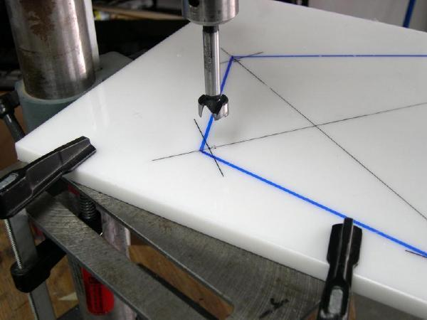
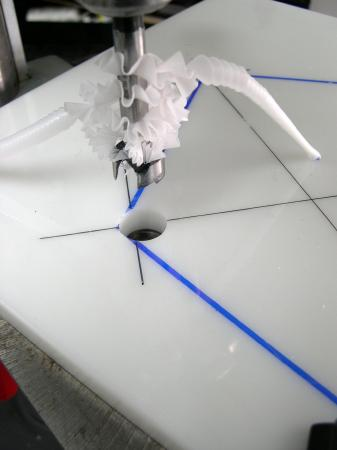

| Cross Sections | Menu Last Page Next Page |
|   | |
|
Drilling HDPE - A 3/4" Forstner bit is used to drill the stringer cutouts in the 1/2" HDPE Cross Sections. HDPE is very easy to drill, and the bit will last through many boat building projects. Clamps may be used to secure the HDPE in place for drilling, though the material can be held in place by hand. The small nail indentation at the hole center insures that the drill bit will be easily aligned.
After drilling, the cutoff line is visible. This line is 1/8" from the hole center. When cut off, this allows the aluminum stringer to "snap" onto the cross section. This simple process eliminates the need for the mechanical connectors normally found in folding kayaks. |
|